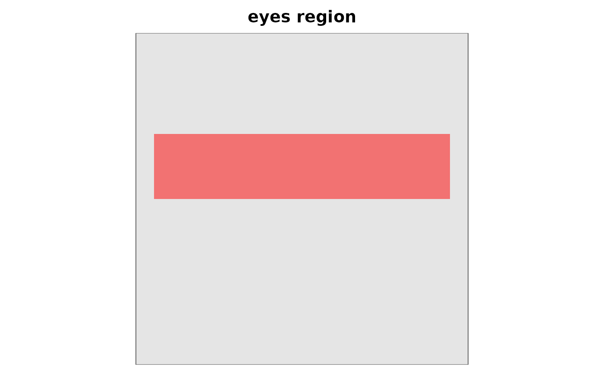

Renders a face mask so you can confirm it covers the region you
intended before passing it to diagnose_infoval() or infoval().
Accepts the same input forms the diagnostics accept: a logical or
numeric vector (column-major, with img_dims supplied), a
logical/numeric matrix, or a path to a PNG/JPEG mask file.
Usage
plot_face_mask(
mask = NULL,
img_dims = NULL,
base_image = NULL,
alpha = 0.5,
col = "red",
threshold = 0.5,
main = NULL,
region = NULL,
region_bounds = NULL,
...
)Arguments
- mask
One of: a logical or numeric vector of length
prod(img_dims)(column-major, as returned bymake_face_mask()orread_face_mask()); a logical or numeric matrix; or a path to a PNG/JPEG mask file. PassNULLand aregionto build the mask internally viamake_face_mask().- img_dims
Integer
c(nrow, ncol), or a single integer for a square image. Required whenmaskis a vector or whenregionis supplied; ignored otherwise.- base_image
Optional path to a PNG or JPEG base face. When supplied, the mask is rendered as a translucent overlay on top.
- alpha
Numeric in
[0, 1]. Overlay opacity. Default0.5.- col
Highlight colour for the masked region. Default
"red".- threshold
When
maskis a numeric matrix or image path, pixels strictly above this value are treated as inside the mask. Default0.5. Ignored for logical input.- main
Optional plot title.
- region
Optional character region name (one of the
make_face_mask()choices) used as a convenience shortcut: builds the mask internally viamake_face_mask(img_dims, region, region_bounds). Mutually exclusive withmask.- region_bounds
Optional length-4 numeric vector forwarded to
make_face_mask()whenregionis one of the rectangle regions. Ignored otherwise.- ...
Reserved for future use.
Details
If base_image is supplied, the mask is drawn as a translucent
overlay on top of the base face — the most useful view for
verifying that the mask aligns with eyes, nose, mouth, etc. The
base image must have the same dimensions as the mask; otherwise
the base is dropped with a warning.
See also
plot_mask_overlay() (overlay on a specific base image),
make_face_mask(), read_face_mask(), diagnose_infoval().
Examples
m <- make_face_mask(c(128L, 128L), region = "eyes")
plot_face_mask(m, img_dims = c(128L, 128L), main = "eyes region")
